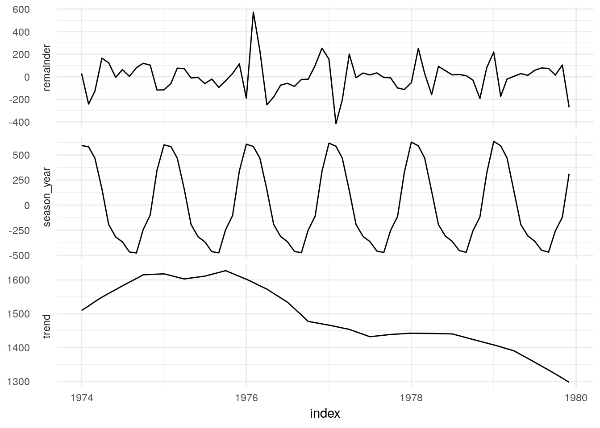

6 Advanced modelling
6.1 Batch
https://github.com/tidyverts/fable/wiki/Tidy-forecasting-with-the-fable-package
Estimating multiple models is a key feature of fable. Most time series can be naturally disaggregated using a series of factors known as keys. These keys are used to uniquely identify separate time series, each of which can be modelled separately.
## # A mable: 2 models
## # Key: sex [2]
## sex model
## * <chr> <model>
## 1 mdeaths ETS(M,A,A)
## 2 fdeaths ETS(M,N,M)6.2 Decomposition
https://github.com/tidyverts/fable/wiki/Combining-models
Objects which support a components method can then have their components modelled separately. The working name for this functionality is model_components, however a shorter (single word) verb is preferred.
The user should be able to specify how each of the components are modelled, and the components method should define how each component is combined (and perhaps some default models that can be used).
library(tsibblestats)
md_decomp <- UKLungDeaths %>%
STL(mdeaths ~ season(window = 12)) %>%
components
md_decomp## # A tsibble: 72 x 4 [1M]
## index Trend Seasonal_year Remainder
## <mth> <dbl> <dbl> <dbl>
## 1 1974 Jan 1510. 594. 30.0
## 2 1974 Feb 1523. 581. -241.
## 3 1974 Mar 1536. 469. -127.
## 4 1974 Apr 1549. 163. 165.
## 5 1974 May 1560. -193. 124.
## 6 1974 Jun 1571. -317. -5.09
## 7 1974 Jul 1583. -366. 63.4
## 8 1974 Aug 1593. -466. 3.69
## 9 1974 Sep 1604. -476. 81.0
## 10 1974 Oct 1615. -243. 120.
## # ... with 62 more rows